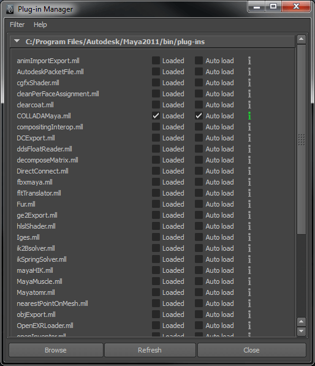
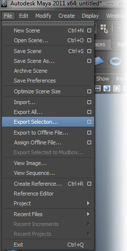
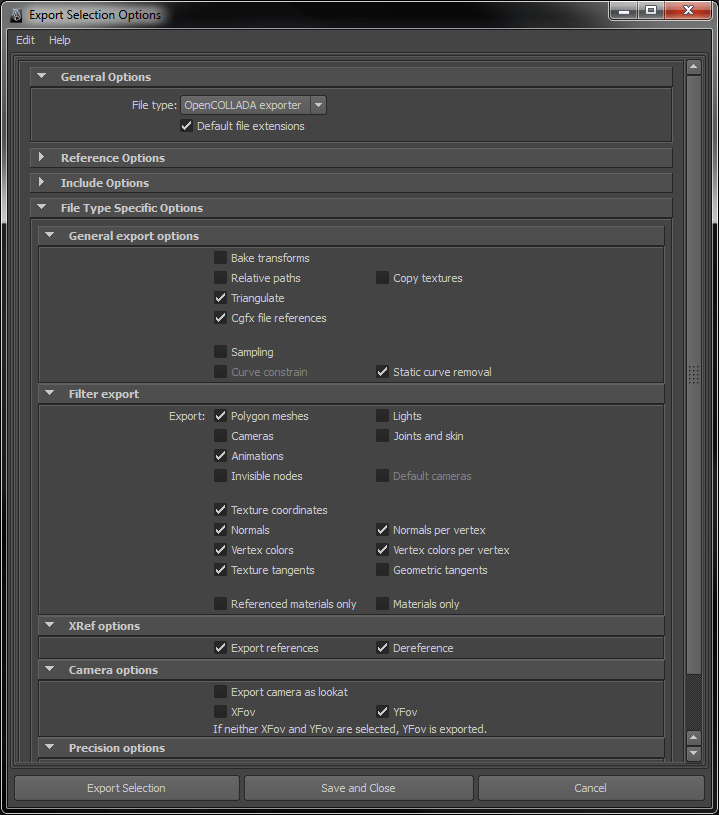
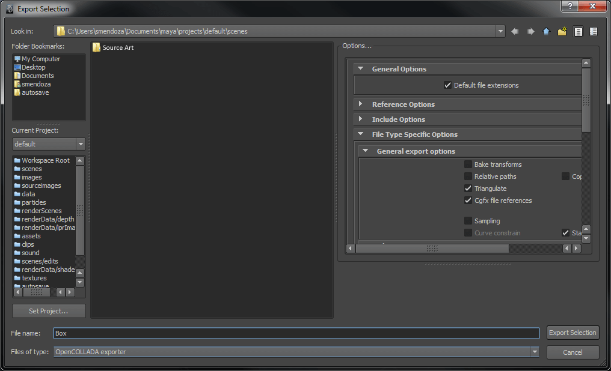

Exporting from Maya
Exporting OpenCOLLADA from Maya
In order for the OpenCOLLADA exporter to be active, some options must be enabled or disabled in the Plug-in Manager. To find it, go to Window > Settings/Preferences > Plug-in Manager.
The fbxmaya.mll plug-in must be unchecked. The COLLADAMaya.mll must be checked as both Loaded and Auto Load.

Next, select File > Export Selection and open the dialog box.

Under General Options, be sure that OpenCOLLADA exporter is selected and set as the default file extension. Under General export options, check that the following options are active.

The triangulate option must be checked before exporting.
Finally, choose the location for the COLLADA file to be saved. It is a good practice to keep all source art, including COLLADA files, in a folder outside of your project folder.
